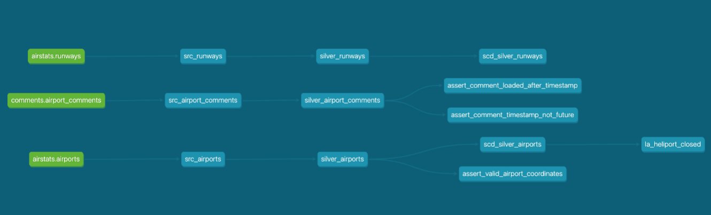

Building an End to End dbt Pipeline on Snowflake: AirStats
An educational walkthrough of a multi layer analytics engineering project covering sources, incremental loading, slowly changing dimensions, data quality testing, and generated documentation.
The Story
- Showcases my ability to build a production grade dbt pipeline end to end on global aviation data from OurAirports.com.
- Covers the full analytics engineering toolkit: designing sources, modeling bronze and silver layers, incrementally ingesting change, tracking slowly changing dimensions, and enforcing data quality as tests.
- Organized by capability so readers can see both what was built and why each decision was made.
- Includes collapsible code samples at each step and the generated dbt documentation at the end.
What This Pipeline Demonstrates
- Source modeling: two logical source groupings (
airstats,comments) pointing at the same Snowflake schema to show that sources are a naming choice, not a physical container. - Medallion architecture: ephemeral bronze staging views that only rename columns, and silver tables that apply cleaning rules and business logic.
- Incremental loading: new user comments append to
silver_airport_commentsusing theis_incremental()+MAX(comment_id)pattern instead of a full rebuild. - Slowly changing dimensions: two snapshots using the
checkstrategy on all columns, validated end to end by closing the Los Angeles County Sheriff's Department Heliport in the raw data and watching the history table capture both versions. - Data quality testing: 21 tests total, including generic tests, three singular tests written as SQL files, five dbt_expectations tests, and two relationships tests set to
warnbecause referential integrity is imperfect in the source. - Automated documentation: markdown doc blocks referenced by
{{ doc() }}, a project level__overview__homepage, and an embedded lineage image rendered indbt docs serve.
Headline Numbers
| Airports modeled | ~72,800 rows in silver_airports |
| Runways modeled | ~44,800 rows in silver_runways |
| User comments modeled | ~15,600 rows in silver_airport_comments |
| Total dbt models | 6 (3 bronze ephemeral + 3 silver) |
| Snapshots | 2 (scd_silver_airports, scd_silver_runways) |
| Data tests | 21 (20 pass, 1 warn) |
| Orphan comments caught by relationships test | 1,367 comments pointing to airport_idents that don't exist |
Source Data: OurAirports.com
OurAirports.com is a crowdsourced, public domain dataset of the world's airports, runways, navigational aids, and user commentary. The raw data lands in Snowflake in three tables under AIRSTATS.RAW, each keyed primarily on ident / airport_ident so they can be joined back together.
| Table | Description | Grain | Key Columns |
|---|---|---|---|
AIRPORTS | Global airport dimension with type, name, coordinates, country | ~72K rows, one per airport | id, ident, type, iso_country |
RUNWAYS | Runway inventory linked to airports | ~44K rows, many per airport | id, airport_ref, airport_ident, closed |
AIRPORT_COMMENTS | User submitted commentary about airports | ~15K rows, many per airport | id, airport_ident, date |
Why This Dataset Is a Good Teacher
- Different grains force honest modeling: one airport can own many runways and receive many comments, so the unique tests have to go on the right column of the right table.
- Referential integrity is imperfect: some user comments reference airport_idents that don't exist in the airports table, which forces you to decide between a hard fail and a warning.
- Comments have a natural timestamp: they are append only over time, which makes them a perfect fit for incremental loading instead of a full rebuild.
- Airports change over time: closed airports, renamed facilities, and type reclassifications are real. That makes them a natural fit for a slowly changing dimension snapshot.
The Toolchain
| Data warehouse | Snowflake (database AIRSTATS, schema DEV) |
| Transformation tool | dbt-core 1.11 with dbt-snowflake adapter |
| Test packages | dbt-utils 1.3, dbt_expectations 0.10, dbt_date 0.17 |
| Python runtime | Python 3.9 in a local virtualenv managed by uv |
| Editor | VS Code with integrated terminal |
| Version control | git, pushed to a public GitHub repository |
Medallion Architecture at a Glance
The pipeline follows a three layer medallion pattern, with clear rules about what each layer is and isn't responsible for.
| Layer | Purpose | Materialization | Example |
|---|---|---|---|
| Raw | Untouched source data in Snowflake, owned by the ingestion process | Table | RAW.AIRPORTS |
| Bronze (staging) | Column renaming, CTE pattern, no business logic | Ephemeral | src_airports |
| Silver | Cleaning, null handling, business rules, ready for downstream use | Table (or incremental) | silver_airports |
The Lineage

dbt docs: raw sources on the left, bronze staging in the middle, silver tables branching into snapshots and singular tests on the right.Defining Sources as Logical Groups
A common misconception is that a dbt source must correspond one to one with a database schema. It doesn't. A source is a logical grouping that you invent — anyone referencing the table writes source('group_name', 'table_name'), and the group name is yours to design.
Here the raw airports and runways belong to one conceptual group, and user comments belong to a different group even though they all physically live in the same Snowflake RAW schema. Splitting them like this keeps the lineage cleaner and lets each group have its own freshness or ownership rules later.
Code: models/sources.yml
version: 2
sources:
- name: airstats
description: "Static reference data about airports and their runways"
schema: raw
tables:
- name: airports
description: "Airports data from OurAirports.com"
columns:
- name: id
- name: ident
- name: type
- name: name
- name: iso_country
- name: runways
description: "Runways data from OurAirports.com"
columns:
- name: id
- name: airport_ref
- name: airport_ident
- name: closed
- name: comments
schema: raw
description: "User submitted airport commentary, append only"
tables:
- name: airport_comments
description: "Comments about airports"
columns:
- name: id
- name: airport_ref
- name: body
- name: airport_ident
- name: date
raw schema, but they sit under different source names because they have different conceptual owners and refresh cadences.
Bronze Staging Views (ephemeral)
Each bronze model does exactly one thing: reference a source via a CTE and rename columns to the project's conventions. Nothing else. Making these ephemeral means they never materialize in the warehouse — they compile inline into whichever silver model consumes them.
-- models/bronze/src_airports.sql
{{ config(materialized='ephemeral') }}
WITH raw_airports AS (
SELECT *
FROM {{ source('airstats', 'airports') }}
)
SELECT
ident AS airport_ident,
type AS airport_type,
name AS airport_name,
latitude_deg AS airport_lat,
longitude_deg AS airport_long,
continent,
iso_country,
iso_region
FROM raw_airports
source() and ref() calls in a CTE, even if the CTE feels redundant. It forces a consistent shape for every staging model and makes later refactors painless.
Silver Layer Rules
- Silver is where business rules live (null handling, empty string replacement, filtering).
- Silver defaults to table materialization via
dbt_project.yml, not inline config in each file. - One silver model overrides the default to incremental in its own
.sqlconfig block:silver_airport_comments. - Columns in silver are referenced by their already renamed bronze names, not the raw source names.
Project level materialization config
# dbt_project.yml (excerpt)
models:
airstats:
silver:
+materialized: table
data_tests:
+store_failures: true
+schema: test_failures
flags:
require_generic_test_arguments_property: true
dbt_project.yml sets the default for an entire folder. Any silver model can still override with its own config() block — which is exactly what silver_airport_comments does.
silver_airports — the central dimension
The simplest of the three. Just a pass through from bronze with no transformations, because the bronze model already did the renames and there's no business logic required for airports.
-- models/silver/silver_airports.sql
WITH src_airports AS (
SELECT *
FROM {{ ref('src_airports') }}
)
SELECT *
FROM src_airports
silver_runways — null/empty handling
The surface of the runway is important for airline operations but the raw data occasionally has nulls or empty strings. A CASE expression normalizes both cases to a sentinel value __UNKNOWN__.
-- models/silver/silver_runways.sql
WITH src_runways AS (
SELECT
runway_id,
airport_ident,
runway_length_ft,
runway_width_ft,
CASE
WHEN runway_surface IS NULL OR runway_surface = ''
THEN '__UNKNOWN__'
ELSE runway_surface
END AS runway_surface,
runway_lighted,
runway_closed
FROM {{ ref('src_runways') }}
)
SELECT *
FROM src_runways
surface instead of the renamed runway_surface, and the model compiled cleanly but failed at run time because the CTE was pulling from the already renamed bronze model. Always trace renames through the layers.
silver_airport_comments — the incremental
The most interesting of the three. It filters out null/empty comment bodies, fills null nicknames with __UNKNOWN__, adds a loaded_at audit timestamp, and only processes new rows on subsequent runs using the is_incremental() macro.
-- models/silver/silver_airport_comments.sql
{{ config(materialized='incremental') }}
WITH src_airport_comments AS (
SELECT
comment_id,
airport_ident,
comment_timestamp,
CASE
WHEN member_nickname IS NULL
THEN '__UNKNOWN__'
ELSE member_nickname
END AS member_nickname,
comment_subject,
comment_body
FROM {{ ref('src_airport_comments') }}
WHERE comment_body IS NOT NULL
AND comment_body != ''
{% if is_incremental() %}
AND comment_id > (SELECT MAX(comment_id) FROM {{ this }})
{% endif %}
)
SELECT *,
current_timestamp() AS loaded_at
FROM src_airport_comments
is_incremental() returns false and the entire source is loaded. On every run after that, it returns true and the query only pulls comments with a comment_id larger than the max already in the target table.
Built in Generic Tests
dbt ships with four generic tests that do the majority of the heavy lifting: unique, not_null, accepted_values, and relationships. Picking which columns to put them on is where the modeling thinking happens.
| Model | Column | Test | Why |
|---|---|---|---|
silver_airports | airport_ident | unique, not_null | It's the business key used to join everywhere |
silver_airports | airport_name | not_null | An airport without a name is unusable downstream |
silver_airports | airport_type | accepted_values | Only 7 valid values exist; anything else is data corruption |
silver_runways | runway_id | unique, not_null | Primary key of the runways grain |
silver_runways | airport_ident | not_null | A runway without a parent airport is orphaned |
silver_airport_comments | comment_id | unique, not_null | Primary key of the comments grain |
silver_airport_comments | airport_ident | not_null | A comment without an airport context is meaningless |
airport_ident as unique on all three tables. It shouldn't be — many runways and many comments can share the same airport. unique belongs only on silver_airports.airport_ident.
Code: the accepted_values test
- name: airport_type
data_tests:
- accepted_values:
arguments:
values:
- closed
- small_airport
- heliport
- large_airport
- medium_airport
- seaplane_base
- balloonport
arguments: when the project flag require_generic_test_arguments_property is set. This is the modern convention and catches a lot of silent bugs.
When to Write a Singular Test
Singular tests are SQL files in the tests/ folder that return rows only when a rule is broken. Zero rows returned means the test passes. They're the right tool when your rule is too bespoke to express as a parameterized generic test.
- Checks that involve multiple columns working together, like "latitude and longitude must both be valid."
- Checks that compare values against external references, like "loaded_at must be after comment_timestamp."
- Checks that encode business logic, like "a comment must not be dated in the future."
Test 1: valid airport coordinates
-- tests/assert_valid_airport_coordinates.sql
-- rationale: coordinates outside these ranges are physically
-- impossible, so any row returned signals data corruption.
SELECT *
FROM {{ ref('silver_airports') }}
WHERE airport_lat NOT BETWEEN -90 AND 90
OR airport_long NOT BETWEEN -180 AND 180
Test 2: comment timestamps must not be in the future
-- tests/assert_comment_timestamp_not_future.sql
-- rationale: a comment can't be posted in the future,
-- so any row returned flags a timestamp error or bad data entry.
SELECT *
FROM {{ ref('silver_airport_comments') }}
WHERE comment_timestamp > current_timestamp()
Test 3: loaded_at must happen after comment_timestamp
-- tests/assert_comment_loaded_after_timestamp.sql
-- rationale: a comment can't be loaded into the warehouse
-- before it was actually posted, so any row returned points
-- to a pipeline timing bug or bad data.
SELECT *
FROM {{ ref('silver_airport_comments') }}
WHERE loaded_at < comment_timestamp
loaded_at, set by the pipeline) against the business timestamp (comment_timestamp, set by the user). If they ever get inverted, something upstream is broken in a way that no single column test could catch.
Why dbt_expectations
The dbt_expectations package ports the Great Expectations library into dbt. It adds around 60 additional test types that would otherwise require singular tests. I used five different ones here deliberately — variety demonstrates more understanding than running the same test against many columns.
The five tests in use
| Model | Column | Test | What it checks |
|---|---|---|---|
silver_airports | airport_ident | expect_column_value_lengths_to_be_between | ICAO/local codes are 2–10 characters |
silver_airports | iso_country | expect_column_values_to_match_regex | Two uppercase letters (ISO 3166-1) |
silver_runways | runway_length_ft | expect_column_values_to_be_between | Runway length is non negative |
silver_runways | runway_lighted | expect_column_max_to_be_between | Binary flag never exceeds 1 |
silver_airport_comments | comment_body | expect_column_value_lengths_to_be_between | Body has at least one character (belt and suspenders with silver's WHERE clause) |
Code: regex on iso_country
- name: iso_country
data_tests:
- dbt_expectations.expect_column_values_to_match_regex:
arguments:
regex: '^[A-Z]{2}$'
ISO 3166-1 alpha-2 country codes are always exactly two uppercase letters (US, FR, JP). The regex catches lowercase entries, three letter codes, and any other encoding mistakes at the boundary.
Referential Integrity with severity: warn
The relationships test checks that every value in a child column exists in a parent column — classic foreign key logic. Runways and comments both reference silver_airports.airport_ident.
But real world data isn't always clean: 1,367 comments in the raw data reference airports that don't exist in the airports table. Failing the whole test run on that isn't the right answer because it's a known data quality gap. Instead, I set the severity to warn, which logs the count without breaking CI.
Code
- name: airport_ident
data_tests:
- not_null
- relationships:
arguments:
to: ref('silver_airports')
field: airport_ident
config:
severity: warn
Store Failures — investigate at your leisure
Failing test rows evaporate from the logs once the run finishes. Setting store_failures: true persists them into a dedicated schema in Snowflake so you can query them any time.
# dbt_project.yml data_tests: +store_failures: true +schema: test_failures
AIRSTATS.DEV_test_failures.relationships_silver_airport_c_... where they can be profiled, filed as a data quality ticket, or used to drive an upstream fix.
Test run output
Finished running 21 data tests in 0 hours 0 minutes and 5.89 seconds. Completed with 1 warning: Warning in test relationships_silver_airport_comments_airport_ident__... Got 1367 results, configured to warn if != 0 Done. PASS=20 WARN=1 ERROR=0 SKIP=0
Why Snapshots
A snapshot is dbt's implementation of a Slowly Changing Dimension Type 2 (SCD Type 2) table. It watches a target table and, every time you run dbt snapshot, compares the current state to the last recorded version. If anything changed, it closes out the old row with a dbt_valid_to timestamp and inserts a new row marked valid from now.
The result is a complete history table you can query to answer "what did this airport look like on March 1st?" instead of only "what does it look like today?"
The check strategy, explained
There are two strategies available: timestamp and check.
- Timestamp: preferred when the source has a reliable
updated_atcolumn. dbt trusts that column and only looks for rows where it changed. - Check: compares the actual column values between runs. Required when the source has no reliable change timestamp, at the cost of being slower and more compute heavy.
The AirStats airports and runways tables have no update timestamp, so check is the only option.
Code: snapshots/scd_silver_airports.yml
snapshots:
- name: scd_silver_airports
relation: ref('silver_airports')
config:
unique_key: airport_ident
strategy: check
check_cols: all
hard_deletes: invalidate
hard_deletes: invalidate tells dbt that if a row disappears from the source table, mark its current snapshot row as invalidated with a dbt_valid_to timestamp — as opposed to ignoring the deletion.
The Problem: Comments Are Append Only
User comments only grow — you add new comments over time but you don't edit or delete old ones. Running a full table rebuild on every pipeline run would scan ~15,000 rows just to reinsert the same 14,999 we already had. That scales badly and wastes Snowflake credits.
Instead, the incremental pattern lets dbt only pull rows with a comment_id larger than what's already in the target table. On every run after the first, the filter WHERE comment_id > (SELECT MAX(comment_id) FROM {{ this }}) keeps the scan tiny.
The two phase is_incremental() trick
The macro is_incremental() returns false on the first run (when the target table doesn't exist yet) and true on every subsequent run. Wrapping the filter in {% if is_incremental() %} means the first run loads everything, and later runs only load the delta.
{% if is_incremental() %}
AND comment_id > (SELECT MAX(comment_id) FROM {{ this }})
{% endif %}
Why MAX(comment_id) instead of unique_key
dbt supports two incremental strategies:
- unique_key: upserts by primary key on every run, which is correct for mutable data but overkill when rows never change.
- MAX filter: only ever inserts new rows, which is lighter and correct when data is append only.
Since comments are append only, the MAX filter is the more efficient and more honest encoding of the business rule.
Proof it works
I inserted a single new row into RAW.AIRPORT_COMMENTS with a fabricated comment_id larger than the current max, then ran dbt run --select silver_airport_comments. The run picked up exactly one row and added it with a fresh loaded_at timestamp.
COMMENT_ID | AIRPORT_IDENT | COMMENT_TIMESTAMP | MEMBER_NICKNAME | LOADED_AT -----------+---------------+-------------------------+-----------------+------------------------ 602622 | KLAX | 2026-04-19 11:47:25.290 | trinidad | 2026-04-19 11:47:59.728
Case Study: Closing an Airport in Real Time
To validate the snapshot end to end, I picked a real airport — the Los Angeles County Sheriff's Department Heliport (airport_ident = '01CN', originally classified as heliport) — and simulated its closure in the raw data. The goal was to see both the original and the closed version in the history table after running the pipeline through.
Step 1 — Baseline snapshot
Run dbt snapshot once before making any changes. This captures the airport as it exists today.
$ dbt snapshot 19:06:47 1 of 1 START snapshot DEV.scd_silver_airports 19:06:49 1 of 1 OK snapshotted DEV.scd_silver_airports [SUCCESS 1 in 2.73s]
Step 2 — Simulate the closure in Snowflake
-- Snowflake SQL worksheet UPDATE AIRSTATS.RAW.AIRPORTS SET type = 'closed' WHERE ident = '01CN';
Step 3 — Propagate and re snapshot
$ dbt run --select silver_airports && dbt snapshot # silver_airports rebuilt with the updated type # snapshot captures the change: 01CN now has 2 history rows
Step 4 — Verify with an analysis
A dbt analysis is a SQL file that lives in the analyses/ folder. Unlike a model, it doesn't materialize — it just compiles. Perfect for ad hoc validation.
-- analyses/la_heliport_closed.sql
WITH scd_silver_airports AS (
SELECT *
FROM {{ ref('scd_silver_airports') }}
WHERE airport_ident = '01CN'
)
SELECT *
FROM scd_silver_airports
The result: two versioned rows
| airport_ident | airport_type | dbt_valid_from | dbt_valid_to |
|---|---|---|---|
| 01CN | heliport | 2026-04-19 19:06:48 | 2026-04-19 19:18:28 |
| 01CN | closed | 2026-04-19 19:18:28 | (null) |
heliport status until 19:18:28, at which point it transitioned to closed. The null dbt_valid_to on the second row marks it as the current version.
Documentation as Reusable Blocks
dbt's docs blocks live in markdown files inside the models/ tree and are referenced from schema.yml descriptions using the {{ doc('name') }} Jinja macro. This keeps the long form documentation separate from the schema definitions while still making it discoverable in the generated docs site.
Code: models/docs.md
{% docs __overview__ %}
# AirStats Pipeline
Purpose: build a data pipeline analyzing global aviation data
from OurAirports.com, covering ~72,000 airports, ~44,000 runways,
and user submitted airport comments.
## How the silver tables connect
The silver layer is organized as a hub and spoke around
`silver_airports`, with `airport_ident` acting as the shared
business key across all three tables.
- `silver_airports` is the central dimension, one row per airport.
- `silver_runways` has one row per runway and joins back to
`silver_airports` via `airport_ident` (many runways per airport).
- `silver_airport_comments` has one row per user comment and
also joins back via `airport_ident`, loaded incrementally.

{% enddocs %}
{% docs airport_ident %}
The airport identifier code, typically the 4-letter ICAO code
(e.g. `KLAX`) for internationally recognized airports, or a
local/FAA code for smaller fields (e.g. `01CN`).
{% enddocs %}
{{ doc() }} macro only works inside YAML description: fields, NOT inside another docs block. Trying to nest {{ doc('x') }} inside a __overview__ block throws a compilation error.
Referencing from silver.yml
models:
- name: silver_airports
description: "{{ doc('silver_layer') }}"
columns:
- name: airport_ident
description: "{{ doc('airport_ident') }}"
data_tests:
- unique
- not_null
Note the quotes around the Jinja expression — required, because YAML parses {{ ... }} as a flow mapping without them and fails.
The Project Homepage
dbt reserves the docs block name __overview__ as the homepage of the generated documentation site. Whatever markdown you put in that block renders as the landing page when someone visits dbt docs serve.
Embedding the lineage image required adding asset-paths: ["assets"] to dbt_project.yml and dropping lineage.png into a top level assets/ folder.
What the homepage renders
The overview page is also where long form documentation — like the hub and spoke explanation of how the silver tables connect — lives for anyone exploring the project for the first time.
Running dbt docs locally
$ dbt docs generate $ dbt docs serve Serving docs at 0.0.0.0:8080 # opens http://127.0.0.1:8080 in the default browser
dbt docs generate builds a static manifest plus catalog JSON, and dbt docs serve serves the static site locally. In CI, you'd push the target/ folder to a static host (S3, Netlify, GitHub Pages) so the rest of the team can browse it without needing a local install.
The Lineage Graph
dbt automatically generates a lineage graph from the ref() and source() calls in your SQL. Every model, snapshot, source, and test becomes a node, and the edges show data flow.
Reading the graph
- Green nodes are raw Snowflake sources (
airstats.airports,airstats.runways,comments.airport_comments). - Teal nodes are dbt models — bronze staging and silver.
- Right hand terminal nodes are the singular tests and snapshot tables that depend on the silver layer.
- The hub shape:
silver_airportsfans out to three downstream nodes, matching the medallion design pattern from earlier.
Why it's useful in real work
- Impact analysis: before modifying
silver_airports, the lineage tells you what else will have to be retested or rebuilt. - Onboarding: a new team member can get oriented in minutes by looking at the lineage instead of reading every SQL file.
- Stakeholder trust: showing non engineers a clean lineage from raw to silver builds confidence that the data they're consuming is traceable.
Lessons Learned Along the Way
Most of what tripped me up wasn't the big concepts — those are well documented. It was the small friction points where two systems (YAML, Jinja, SQL, git, Snowflake) meet.
Lesson 1 — Column renames stack across layers
When a bronze model renames surface to runway_surface, the silver model downstream must reference runway_surface, not surface. The compile step won't catch this because the SQL is syntactically valid; it only blows up at query execution time in Snowflake.
Lesson 2 — YAML + Jinja needs careful quoting
Writing description: {{ doc('silver_layer') }} fails because YAML tries to parse the {{ ... }} as a flow mapping. The fix is to wrap it in quotes: description: "{{ doc('silver_layer') }}". Similarly, {{ doc() }} does not work inside another docs block — only inside YAML description fields.
Lesson 3 — Sources are logical, not physical
A dbt source is a naming choice, not a database object. Two sources can point to the same schema — and often should, when you want to group tables by ownership, refresh cadence, or domain rather than by where they physically live.
Lesson 4 — Severity is a design decision
Setting a failing test to severity: warn isn't giving up on data quality — it's an intentional choice to surface known issues without breaking CI. The 1,367 orphan comments are a real data gap, but failing every build on them would desensitize the team to test failures that actually matter.
Lesson 5 — .gitignore before you commit
Early on, the entire airstats/ folder was gitignored by a template default. Updating .gitignore to exclude only airstats/profiles.yml, airstats/target/, airstats/dbt_packages/, and airstats/logs/ keeps the work committable while protecting credentials and build artifacts. Audit your .gitignore before you push, not after.
Where This Pipeline Could Go
The current pipeline is a solid foundation but intentionally stops at silver. Here's what a production build would layer on top.
A gold / mart layer
Silver is clean but still normalized. A gold layer would denormalize for analyst consumption — for example, a fct_airport_activity that joins airports to their runway counts and comment volumes, with preaggregated metrics like "average runway length by airport type" ready for a BI tool.
Orchestration
Right now the pipeline runs on demand from the terminal. A real deployment would schedule it via Airflow, Dagster, or dbt Cloud — triggering on a cadence (hourly? daily?) driven by the comments table's natural arrival pattern and alerting on test failures.
CI / CD
Every pull request should trigger dbt build --select state:modified+ in a staging environment, run all downstream tests, and block the merge if anything fails. That's the dbt-native equivalent of unit tests in application code.
Freshness and monitoring
A freshness: block on each source declares how recent the data should be. dbt checks it automatically and fails if, say, the comments source hasn't received a new row in 24 hours — which often means something upstream is broken before any test would catch it.
Exposures and consumers
Defining exposures in YAML tells dbt which dashboards, ML models, or external systems consume each silver table. That metadata surfaces in the lineage graph and makes impact analysis truly end to end: "If I change silver_airports, here are the five dashboards and one ML model that will be affected."